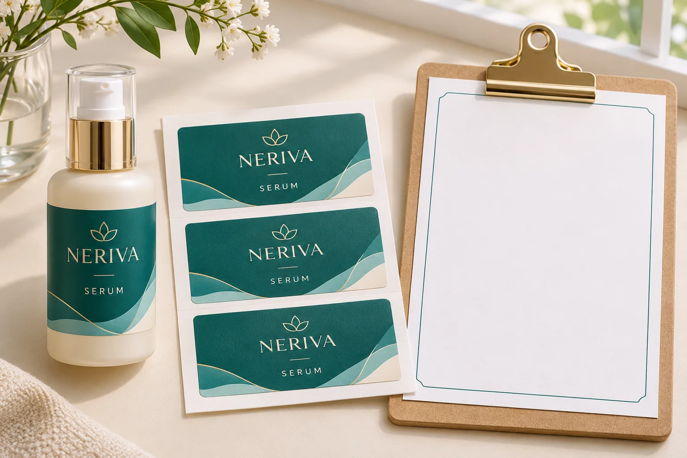
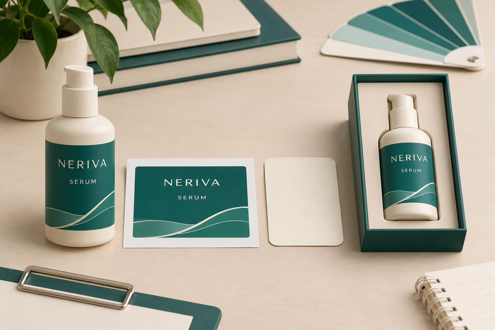

Before paying for cosmetic label samples, ask what the fee buys and which decision the supplied pieces can support. A request for a sample can mean an existing material reference, custom printed labels, an applied presentation pack or another agreed deliverable. Those are possibilities to discuss, not a list of sample services guaranteed for every YT Labels project.
Obtain a written scope naming the construction, artwork, quantity, supplied format, cost and timing basis. Keep any shipping charge, revision allowance and proposed credit against a later order visible. The YT Labels sample policy says physical samples may be arranged after project details are confirmed, with cost and timing depending on the requirements. It does not publish a fixed sample price or an automatic bulk-order credit.

Name the decision before choosing a sample
If the team is still deciding between clear and opaque appearance, identify that question first. If the label must be evaluated on a coated bottle after formula contact, the sample brief needs the actual construction, container and relevant conditions. If a co-packer needs to review feeding, loose labels alone may leave the receiving operation unresolved.
Describe the decision in one sentence: who needs to approve what, on which pack, before the next order action? Then ask the supplier which sample route it can propose. Do not pay for an elaborate presentation object merely because it looks more complete, and do not approve a production requirement from a reference that was only supplied to discuss colour or texture.
Separate the deliverables in the quotation
| Field | Ask the supplier to identify | Why it changes the purchase |
|---|---|---|
| Purpose | The particular appearance, fit, material or application question | Shows what the sample should help settle |
| Contents | Existing references or job-specific pieces; printed or unprinted; flat, applied, roll or another stated format | Prevents different sample types being priced as if equivalent |
| Construction and version | Material, adhesive, finish, artwork ID and any substitutions | Defines how closely the sample represents the proposed job |
| Quantity and supply | Pieces per design or component, how supplied and where sent | Connects the fee to an actual deliverable |
| Charges | Preparation, production, special tooling, packing and shipping where applicable | Makes included and additional work visible |
| Timing | Required inputs, timing start point and proposed dispatch | Distinguishes a request from a confirmed schedule |
| Changes | Included correction or revision scope and what triggers a new quote | Prevents an unfinished file becoming an unlimited-work assumption |
| Later order | Any written credit, expiry, qualifying order and exclusions | Allows a credit to be compared without assuming it exists |
Keep a supplier's exact description beside each line. “Sample fee” alone does not identify whether it covers a special cutting tool, a short printed job, shipping or preparation work. If tooling is separately quoted, the tooling and setup guide helps ask what is created and what reuse terms apply. Paying a sample charge does not by itself establish ownership or a right to transfer assets.
Compare two sample proposals on the same basis
Consider two hypothetical proposals. One offers an existing material reference without the buyer's artwork. Another proposes a job-specific printed sample. Comparing only their total prices hides their different purposes. The reference may help narrow an appearance choice; the printed proposal may address layout on an identified construction. Neither should be described as having passed an adhesion or machine test unless the required evaluation actually occurred and its scope is recorded.
Write the unresolved decision beside each proposal. Mark what it covers, what remains open and what further work is needed before production approval. A lower initial fee can be useful if it answers the immediate question. A more representative sample can be worth discussing when a critical decision cannot be resolved from a generic reference. The appropriate choice depends on the actual job and the written offer.

Resolve revisions and bulk credits before payment
Ask which file revision the quotation covers. If an ingredient panel, size or finish remains unsettled, identify it openly and ask how a later change would affect the proposed sample. Distinguish correction of a supplied file from a new design request; use the parties' agreed scope rather than assuming every revision is included.
If a supplier proposes crediting a sample fee against bulk production, record the amount or calculation, qualifying order, timing conditions and excluded charges. Ask whether the credit applies only to an unchanged construction or approved design. Until those terms are confirmed, compare the sample as a separate purchase and leave the credit unknown. This guide offers no credit policy or guaranteed saving.
Use a five-step sample purchase check
- Define the open decision. Name the pack, reviewer and specific question the sample must answer.
- Confirm the proposal. Match deliverables, construction, artwork and quantities to the written scope.
- Reconcile charges and changes. Ask about shipping, included revisions, extra work and any later-order credit.
- Record timing dependencies. Identify what must be approved before the sample schedule starts and where it will be received.
- Accept only the agreed scope. Keep the quotation and sample reference together, then evaluate the received material against its stated purpose.
Hold the affected sample purchase if the deliverable, fee basis or necessary input remains unclear. After receipt, keep any physical evaluation separate from the commercial acceptance of the delivery. The adhesive sample-planning guide records application and observation conditions; the digital proof guide covers file review. Neither replaces the written sample offer.
For a cosmetic label project, prepare bottle photographs, label dimensions, quantity by design, artwork status and the decision still open. Use the inquiry form to prepare a message, then send artwork and references separately by email or WhatsApp. Ask which sample route is available for those requirements and what the quotation includes.